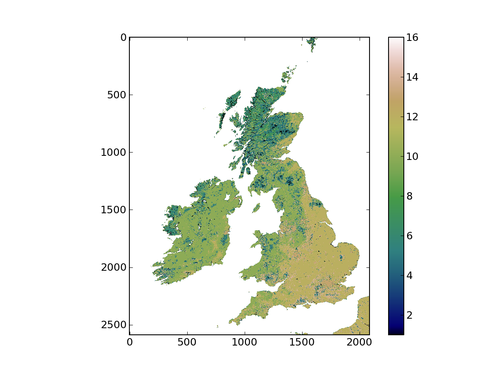

Python <http://www.python.org/> is a general purpose interpreted programming language. The language is quite abstract from the computer’s inner workings, and many extensions to deal with a wide variety of functionality is provided either by default, or through widely available extension packages. A benefit of python is that the code is portable, running with no or very minor modifications in heterogenous systems and architectures. Since it is provided under a free software license, it is also easy to distribute. In this document, a number of fairly standard extensions will be assumed present:
- numpy <http://numpy.scipy.org/>
- This extension provides numerical types that efficiently deal with large blocks of data often found in scientific computing or satellite imagery. Functionality that operates on this data is also provided.
- scipy <http://www.scipy.org/>
- This package extends numpy to provide a wide range of numerical funcionality, such as linear algebra, Fourier transforms, statistics, optimisation...
- matplotlib <http://matplotlib.sf.net>
- A package to produce high quality two dimensional plots and grahpics
- ipython <http://ipython.scipy.org/>
- A useful “shell” to python, particularly indicated for scientific computing
- GDAL <http://gdal.osgeo.org/>
- A collection of programs and libraries that allow access to geospatial data (either raster or vectorial). The
The UCL system has the Enthought Python Distribution installed, which is free for academic use. The GDAL libraries and executables are also installed throughout the system, and if your user is properly configured, you should be able to type some commands and get the same output we get below:
$ gdal_translate Usage: gdal_translate [--help-general] [-ot {Byte/Int16/UInt16/UInt32/Int32/Float32/Float64/ CInt16/CInt32/CFloat32/CFloat64}] [-strict] [-of format] [-b band] [-mask band] [-expand {gray|rgb|rgba}] [-outsize xsize[%] ysize[%]] [-unscale] [-scale [src_min src_max [dst_min dst_max]]] [-srcwin xoff yoff xsize ysize] [-projwin ulx uly lrx lry] [-a_srs srs_def] [-a_ullr ulx uly lrx lry] [-a_nodata value] [-gcp pixel line easting northing [elevation]]* [-mo "META-TAG=VALUE"]* [-q] [-sds] [-co "NAME=VALUE"]* [-stats] src_dataset dst_dataset [...] $ ogr2ogr Usage: ogr2ogr [--help-general] [-skipfailures] [-append] [-update] [-select field_list] [-where restricted_where] [-progress] [-sql <sql statement>] [-dialect dialect] [-preserve_fid] [-fid FID] [-spat xmin ymin xmax ymax] [-a_srs srs_def] [-t_srs srs_def] [-s_srs srs_def] [-f format_name] [-overwrite] [[-dsco NAME=VALUE] ...] dst_datasource_name src_datasource_name [-lco NAME=VALUE] [-nln name] [-nlt type] [layer [layer ...]] $ gdal_merge.py No input files selected. Usage: gdal_merge.py [-o out_filename] [-of out_format] [-co NAME=VALUE]* [-ps pixelsize_x pixelsize_y] [-tap] [-separate] [-q] [-v] [-pct] [-ul_lr ulx uly lrx lry] [-n nodata_value] [-init "value [value...]"] [-ot datatype] [-createonly] input_files [--help-general]
The workflow one usually follows with raster data is as follows
The first step is not always required, but GDAL has a large number of very useful tools that sometimes are easier or more efficient to use than rolling your own code using Python scripts. Chaining these tools usually requires some sort of shell scripting. Once in python, geospatial data is read into numpy arrays, which are modified by applying algorithms supplied by the user or from any python library. The results can be plotted using matplotlib, and the results can be saved in a number of formats (ASCII, binary files, etc.). For outputting to geospatial formats, we use GDAL again.
Raster data is often found in a wide variety of formats: “Raw” binary, GeoTIFF, HDF, NetCDF, etc. GDAL offers an abstraction that deals with a very large variety of formats in a consistent fashion, simplifying data access. A raster file as far as GDAL is concerned consists of one or more bands (two-dimensional data arrays). Each element in the array (pixel) represents an area. The location of that particular pixel is encoded by its position (row, column) in the array and both its geotransform and projection information. The geotransform converts from pixel number in row and column position into a reference system. This system is further characterised by its projection properties (for example, for mapping positions on the surface of the Earth to a plane). The geotransform needs to know about the top left hand corner of the image, as well as the pixel spacing. This information is encoded in a six-element vector:
Let’s see how this works in a real example. In order to do this, we shall use the gdalinfo command line utility:
$ gdalinfo ./qgis-1.6.0/tests/testdata/landsat.tif Driver: GTiff/GeoTIFF Files: ./qgis-1.6.0/tests/testdata/landsat.tif Size is 200, 200 Coordinate System is: PROJCS["WGS 84 / UTM zone 33N", GEOGCS["WGS 84", DATUM["WGS_1984", SPHEROID["WGS 84",6378137,298.257223563, AUTHORITY["EPSG","7030"]], AUTHORITY["EPSG","6326"]], PRIMEM["Greenwich",0], UNIT["degree",0.0174532925199433], AUTHORITY["EPSG","4326"]], PROJECTION["Transverse_Mercator"], PARAMETER["latitude_of_origin",0], PARAMETER["central_meridian",15], PARAMETER["scale_factor",0.9996], PARAMETER["false_easting",500000], PARAMETER["false_northing",0], UNIT["metre",1, AUTHORITY["EPSG","9001"]], AUTHORITY["EPSG","32633"]] Origin = (781662.375000000000000,3350923.125000000000000) Pixel Size = (57.000000000000000,-57.000000000000000) Metadata: AREA_OR_POINT=Area Image Structure Metadata: INTERLEAVE=BAND Corner Coordinates: Upper Left ( 781662.375, 3350923.125) ( 17d55'38.33"E, 30d15'26.24"N) Lower Left ( 781662.375, 3339523.125) ( 17d55'27.38"E, 30d 9'16.37"N) Upper Right ( 793062.375, 3350923.125) ( 18d 2'44.37"E, 30d15'16.52"N) Lower Right ( 793062.375, 3339523.125) ( 18d 2'32.98"E, 30d 9' 6.68"N) Center ( 787362.375, 3345223.125) ( 17d59' 5.77"E, 30d12'16.50"N) Band 1 Block=200x40 Type=Byte, ColorInterp=Gray Band 2 Block=200x40 Type=Byte, ColorInterp=Undefined Band 3 Block=200x40 Type=Byte, ColorInterp=Undefined Band 4 Block=200x40 Type=Byte, ColorInterp=Undefined Band 5 Block=200x40 Type=Byte, ColorInterp=Undefined Band 6 Block=200x40 Type=Byte, ColorInterp=Undefined Band 7 Block=200x40 Type=Byte, ColorInterp=Undefined Band 8 Block=200x40 Type=Byte, ColorInterp=Undefined Band 9 Block=200x40 Type=Byte, ColorInterp=Undefined
The syntax is very straightforward: you give the filename as the first argument and gdalinfo reports the properties of the dataset. This particular file is a GeoTIFF (see how GDAL tells us that much in the Driver line). It then repeats the name of the file, and reports its size (in this case, 200 by 200 pixels). The coordinate system is a UTM/33N projection using a WGS84 datum, and the following lines are a complete description of the projection and all the parameters that are needed. The origin line is the origin location of the dataset, i.e., the coordinates of the top left hand corner of the image, followed by the pixel spacing. If any metadata (data that describes the data, such as author, parameters used in the production of the dataset, etc.) is present in the file, it is reported. In this case, two elements of metadata are given: AREA_OR_POINT and INTERLEAVE. Following this, we have the bounding box of the data (in projected coordinates as well as longitude/latitude degrees), as well as the center of the dataset. Finally, a list of the bands, the data type of each, and the color interpretation scheme (if present) are given.
A typical requirement in many applications is to crop, resample and reproject data from a file. The gdalwarp utility does all this (and quite a bit more. See the command line help for a taste of its many abilities). In this example, we’ll use landcover data from the MODIS instrument, and extract and reproject a region of interest, reproject it and resample it. The area of interest is the Kakadu National Park, located in the Northern Territory in Australia (the Park’s extends from latitudes 131.88E to 133E and 14S to 12S approximately). The output projection is the Map Grid of Australia, with GDA94 datum.
The MODIS data are provided in square tiles representing a 10degree (1200x1200km) area on the surface of the Earth. Data are gridded using the MODIS sinusoidal projection. All the MODIS landcover tiles are available on the UCL system (in /data/geospatial_10/ucfajlg/MOD12/), but you need to find out which one covers Kakadu. The following website allows you to look what the tile is. It will be in the following format hXXvYY, where XX is the horizontal tile and YY is the vertical tile.
Having found the tile, identify the MODIS HDF file that contains the data, and run gdalinfo on it. Note the metadata items, and the subdatasets. HDF files contain different spatial datasets in them. In the case of the MODIS land cover product, these are different land cover schemes, as well as auxiliary data regarding uncertainty etc. For this exercise, we want to use the LandCover 1 product. This is done by using the subdataset name instead of the filename. GDAL understands this, and looks for the file and selects the required dataset. They are of the form HDF4_EOS:EOS_GRID:"/path/to/hdf/file.hdf":MOD12Q1:Land_Cover_Type_1. Note that you need to escape the " in the shell.
It is more convenient to use EPSG codes to specify the target projection. They are shorter, easier to remember and less prone to error. The simplest way is to search for GDA94 MDA94 zone 53 on spatialreference.org, and note down the EPSG code (a number!).
We now calculate the boundary of the park in the target spatial reference system using gdaltransform:
$ gdaltransform -s_srs "EPSG:4326" -t_srs "EPSG:XXXX"
131.88 -14 # Type this
162920.666204532 8450051.79924092 0
133 -12 # This this
282241.145313306 8672655.93585227 0
In the above piece of code, we have used a conversion from latitude/longitude values in WGS-84 (EPSG code 4326) to the target EPSG code (marked here as XXXX). We are now ready to transform the data using gdalwarp:
$ gdalwarp -of GTiff -te 163000 8449000 283500 8673000 \
-t_srs "EPSG:XXXX" -tr 250 250 \
'HDF4_EOS:EOS_GRID:"/path/to/hdf/file.hdf":MOD12Q1:Land_Cover_Type_1' \
output_file.tif
Check that indeed output_file.tif corresponds to the extent, projection and resolution that you expect. Also, try gdalinfo -stats output_file.tif to get a quick idea of the distribution of raster cell values (this is a useful quick check).
There is a wealth of satellite data available through the Internet. So far, we have seen how to deal with MODIS data, but we shall now see how to download data. Get your own landcover data directly from the web! Go to REVERB/ECHO and try repeating the above exercise for another location or year.
Mosaicking data files is similar to putting a puzzle together. Take the land cover HDF files used above: all the tiles that cover the world are available. However, some countries or territories are spread over different tiles (the UK is split over 4 or 5 tiles). There are two things one might want to do: to stitch together all the tiles and produce 500m resolution landcover map of the world (not practical, imagine the memory it would take! And how redundant to produce another file with the same contents that are already spread over the original files). More practically, you may want to extract, e.g. the Bristih Isles from the global mosaic, in a single file. GDAL can be used to solve these problems very elegantly using virtual datasets (VRT). These are XML files that point to the individual files that make up the mosaic, as well as the rules for stitching them up spatially or otherwise. There is a lot of extra functionality on VRT files, but let’s start with the following task, outlined at the beggining of this section:
To do this, we shall use two GDAL utilities gdalbuildvrt and gdal_translate. The former builds the VRT files (unsurprisingly!) from a text file, and the second transforms one dataset into another, allowing for cropping or changing of format. The first thing we do is to produce a file with all the paths to the HDF files. With the UNIX shell, this is easily done as:
$ for hdf_file in /data/geospatial_10/ucfajlg/MOD12/*.hdf;
do
echo 'HDF4_EOS:EOS_GRID:"'${hdf_file}'":MOD12Q1:Land_Cover_Type_1' >> hdf_file_list.txt
done
You can see the contents of hdf_file_list.txt and satisfy yourself that it is just a list of HDF datasets. Next, we use gdalbuildvrt to create a VRT:
$ gdalbuilvrt -input_file_list hdf_file_list.txt global_mosaic.vrt
This command will have created the VRT global_mosaic.vrt using the files you put together in the file list. Finally, we’ll crop this file using the British Isles coordinates and gdal_translate:
$ gdal_translate -of "GTiff" -projwin -807155 6718021 159555 5519197 global_map.vrt britain.vrt
Input file size is 86400, 43200
Computed -srcwin 41457 7100 2087 2588 from projected window.
0...10...20...30...40...50...60...70...80...90...100 - done.
[ This bit takes a while ]
$ gdalinfo britain.tif
Driver: GTiff/GeoTIFF
Files: britain.tif
Size is 2087, 2588
Coordinate System is:
PROJCS["unnamed",
GEOGCS["Unknown datum based upon the custom spheroid",
DATUM["Not_specified_based_on_custom_spheroid",
SPHEROID["Custom spheroid",6371007.181,0]],
PRIMEM["Greenwich",0],
UNIT["degree",0.0174532925199433]],
PROJECTION["Sinusoidal"],
PARAMETER["longitude_of_center",0],
PARAMETER["false_easting",0],
PARAMETER["false_northing",0],
UNIT["metre",1,
AUTHORITY["EPSG","9001"]]]
Origin = (-807554.064908068627119,6718034.389652783982456)
Pixel Size = (463.312716527774057,-463.312716527776786)
Metadata:
AREA_OR_POINT=Area
Image Structure Metadata:
INTERLEAVE=BAND
Corner Coordinates:
Upper Left ( -807554.065, 6718034.390) ( 14d42'38.45"W, 60d25' 0.00"N)
Lower Left ( -807554.065, 5518981.079) ( 11d12'47.36"W, 49d38' 0.00"N)
Upper Right ( 159379.574, 6718034.390) ( 2d54'11.93"E, 60d25' 0.00"N)
Lower Right ( 159379.574, 5518981.079) ( 2d12'46.94"E, 49d38' 0.00"N)
Center ( -324087.245, 6118507.734) ( 5d 5' 4.52"W, 55d 1'30.00"N)
Band 1 Block=2087x3 Type=Byte, ColorInterp=Gray
NoData Value=255
You can visualise the resulting file in QGIS or in Envi, and satisfy yourself that the file covers indeed the British Isles. You should see something like this:
